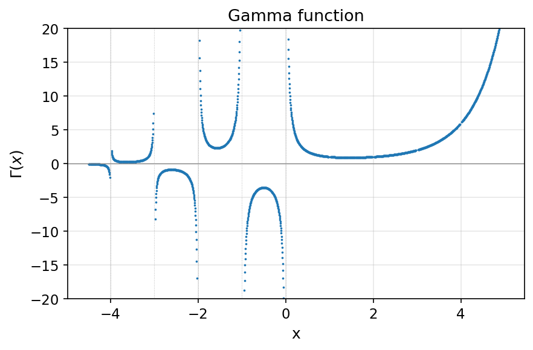
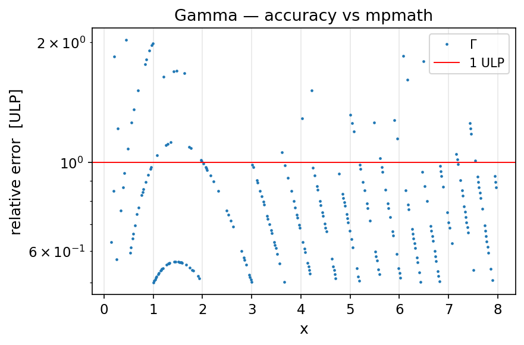

- Generated by
 1.13.2
1.13.2
|
fortran-bessels
Fast, accurate Bessel functions in pure modern Fortran
|
gamma_BK(x) evaluates Euler's gamma function
\[ \Gamma(x) = \int_0^{\infty} t^{x-1} e^{-t}\, dt, \]
the continuous extension of the factorial, \( \Gamma(n) = (n-1)! \) for positive integers \( n \). It is used internally by the variable-order Bessel routines and is re-exported from the bessels module for convenience.

| \( x \) | \( \Gamma(x) \) |
|---|---|
| \( 1 \) | \( 1 \) |
| positive integer \( n \) | \( (n-1)! \) |
| \( 0, -1, -2, \dots \) | simple poles ( \( \pm\infty \)) |
| \( +\infty \) | \( +\infty \) |
gamma_BK accepts a real argument; an integer-argument overload provides a factorial-optimized fast path for small integer orders.
gamma_BK is faster than the gfortran intrinsic gamma (≈26 ns/eval vs ≈38 ns/eval) at matching accuracy. The relative error against an mpmath arbitrary-precision reference is shown below in ULPs of real64:
